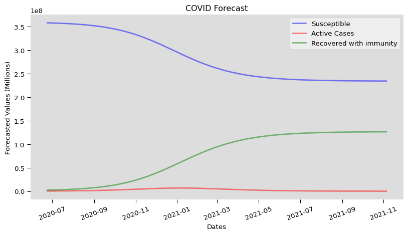

Code
import pandas as pd
from forecast import optimize_fit, SIR
import matplotlib.pyplot as plt
import numpy as npMarch 18, 2024
Abstract Goes Here
Back in 2020 on July 29th, I published a long term COVID prediction model based on a simple and well known Epidemiology model called SIR. The model makes long term predictions on what happens to a population when a new infectious disease is introduced. At the time of writing, this wasn’t a popular model to pursue since it was harder to predict and prove short term COVID case counts. Now in 2025, I thought it would be interesting to see how good this kind of modeling was and how it could have been improved in hindsight.
The following data represents counties with various population, mobility, and disease case numbers. The data is provided by multiple sources, including John Hopkins University, Apple, Google and the CDC. COVID 19 case numbers are relatively inaccurate measurements of the number of infected people as testing has been inconsistent in the US and the federal guidelines for reporting were not established early enough during collection of this data.
| date | State | County.Name | countyFIPS | cases | deaths | population | new_cases | new_deaths | |
|---|---|---|---|---|---|---|---|---|---|
| 100 | 2020-05-01 | Alabama | Autauga | 1001 | 42 | 3.0 | 55869.0 | 0.0 | 0.0 |
| 101 | 2020-05-02 | Alabama | Autauga | 1001 | 45 | 3.0 | 55869.0 | 3.0 | 0.0 |
| 102 | 2020-05-03 | Alabama | Autauga | 1001 | 48 | 3.0 | 55869.0 | 3.0 | 0.0 |
| 103 | 2020-05-04 | Alabama | Autauga | 1001 | 53 | 3.0 | 55869.0 | 5.0 | 0.0 |
| 104 | 2020-05-05 | Alabama | Autauga | 1001 | 53 | 3.0 | 55869.0 | 0.0 | 0.0 |
We will study the effects of the virus at the National level and simplify the data a bit more.
A simple mathematical description of the spread of a disease in a population is the so-called SIR model, which divides the (fixed) population of N individuals into three “compartments” which may vary as a function of time, t:
The SIR model describes the change in the population of each of these compartments in terms of two parameters, β and γ. β describes the effective contact rate of the disease: an infected individual comes into contact with β other individuals per unit time (of which the fraction that are susceptible to contracting the disease is S/N). γ is the mean recovery rate: that is, 1/γ is the mean period of time during which an infected individual can pass it on. γ can often be calculated through statistical means, while β can be easily found at the end of the epidemic.
SIR models uses ODE to evaluate the change in infected to recovered cases in a population. The system of ODE is solved for integer time t and the output is a model of each function of SIR with respect to time. It can be shown that the system of ODE is given by the following
\[\frac{dS}{dt} = - \beta * I(t) * S(t) / N(t) \] \[\frac{dI}{dt} = \beta * I(t) * S(t) / N(t) - \gamma * I(t)\] \[\frac{dR}{dt} = \gamma * I(t)\]
| cases | deaths | population | recovered_cases | infected | |
|---|---|---|---|---|---|
| date | |||||
| 2020-07-21 | 3871366 | 140654.0 | 328021328.0 | 3572226.0 | 299140.0 |
| 2020-07-22 | 3949024 | 141922.0 | 328021328.0 | 3637066.0 | 311958.0 |
| 2020-07-23 | 4006793 | 142818.0 | 328021328.0 | 3700379.0 | 306414.0 |
| 2020-07-24 | 4080745 | 143960.0 | 328021328.0 | 3778177.0 | 302568.0 |
| 2020-07-25 | 4145882 | 144880.0 | 328021328.0 | 3845894.0 | 299988.0 |
The fundamental problem of this model is finding β during the pandemic, of which there is hope in defining c = β/γ = # of close contacts infections a person will have during their contagious period. This can be statistically calculated through contact tracing and testing and can also be found at the end of the pandemic. Unfortunately, this pandemic has proven hard to test and trace accurately, making contact tracing difficult if not impossible to calculate. The approach used in this study for finding parameter β is by fitting the SIR model to historic data using quasi Newtonian optimization methods.
Using this history based method for calculating β, the parameter γ must also be evaluated. Fortunately, from many resources such as John Hopkins University and now the CDC, 1/γ is estimated as 10 days (meaning an infected person is contagious for 10 days on average). Using this information, COVID 19 case counts can be converted to active (meaning contagious ) case counts by using a sliding window of 1/γ = 10 days. Thus our study requires 70 days of case history to train and model 60 days worth of day. For this, We assume new case counts are the start of the contagious period of 1/γ.
t = np.arange(np.datetime64(historic.name), np.datetime64(historic.name) + forecast_horizon)
fig = plt.figure(facecolor='w', figsize=(10, 5))
ax = fig.add_subplot(111, facecolor='#dddddd', axisbelow=True)
ax.plot(t, s, 'b', alpha=0.5, lw=2, label='Susceptible')
ax.plot(t, i, 'r', alpha=0.5, lw=2, label='Active Cases')
ax.plot(t, r, 'g', alpha=0.5, lw=2, label='Recovered with immunity')
ax.set_xlabel('Dates')
ax.set_ylabel('Forecasted Values (Millions)')
ax.yaxis.set_tick_params(length=5)
ax.xaxis.set_tick_params(length=5, rotation=20)
# Add descriptions to chart
#ax.axvline(x=np.datetime64("2020-07-20"), color='gray', linestyle='--', linewidth=2, label="Event Date")
#ax.text(np.datetime64("2020-07-20"), 10**8, "Key Event", color='gray', fontsize=12, ha='right', va='top')
legend = ax.legend()
legend.get_frame().set_alpha(0.5)
for spine in ('top', 'right', 'bottom', 'left'):
ax.spines[spine].set_visible(False)
ax.set_title("COVID Forecast")
plt.savefig("covid_predictions.png")
---
date: '2024-03-18'
title: "COVID Reflection"
categories: [Paper, Python, Dataviz, COVID]
image: "/assets/Iris_pca.png"
title-block-banner: false
format:
html:
toc: true
code-fold: true
code-tools: true
link-external-icon: true
link-external-newwindow: true
---
```{python}
import pandas as pd
from forecast import optimize_fit, SIR
import matplotlib.pyplot as plt
import numpy as np
```
*Abstract Goes Here*
## Introduction
Back in 2020 on July 29th, I published a long term COVID prediction model based on a simple and well known Epidemiology model called SIR. The model makes long term predictions on what happens to a population when a new infectious disease is introduced. At the time of writing, this wasn't a popular model to pursue since it was harder to predict and prove short term COVID case counts. Now in 2025, I thought it would be interesting to see how good this kind of modeling was and how it could have been improved in hindsight.
## Data
The following data represents counties with various population, mobility, and disease case numbers. The data is provided by multiple sources, including John Hopkins University, Apple, Google and the CDC. COVID 19 case numbers are relatively inaccurate measurements of the number of infected people as testing has been inconsistent in the US and the federal guidelines for reporting were not established early enough during collection of this data.
```{python}
covid_2020 = pd.read_csv("covid_counties_7_2020.csv", low_memory=False)[['date', 'State', 'County.Name', 'countyFIPS', 'cases', 'deaths', 'population', 'new_cases', 'new_deaths']]
covid_2020[100:110].head(5)
```
We will study the effects of the virus at the National level and simplify the data a bit more.
```{python}
covid_usa = covid_2020[['date','cases','deaths','population']].groupby(by=['date']).sum()
covid_usa.head(5)
```
## Methods
A simple mathematical description of the spread of a disease in a population is the so-called SIR model, which divides the (fixed) population of N individuals into three "compartments" which may vary as a function of time, t:
* S(t) are those susceptible but not yet infected with the disease
* I(t) is the number of infectious individuals
* R(t) are those individuals who have recovered from the disease and now have immunity to it.
The SIR model describes the change in the population of each of these compartments in terms of two parameters, β and γ. β describes the effective contact rate of the disease: an infected individual comes into contact with β other individuals per unit time (of which the fraction that are susceptible to contracting the disease is S/N). γ is the mean recovery rate: that is, 1/γ is the mean period of time during which an infected individual can pass it on. γ can often be calculated through statistical means, while β can be easily found at the end of the epidemic.
SIR models uses ODE to evaluate the change in infected to recovered cases in a population. The system of ODE is solved for integer time t and the output is a model of each function of SIR with respect to time. It can be shown that the system of ODE is given by the following
$$\frac{dS}{dt} = - \beta * I(t) * S(t) / N(t) $$
$$\frac{dI}{dt} = \beta * I(t) * S(t) / N(t) - \gamma * I(t)$$
$$\frac{dR}{dt} = \gamma * I(t)$$
```{python}
γ_inverse = 10
γ = 1/γ_inverse
covid_usa['recovered_cases'] = covid_usa.shift(periods = γ_inverse)['cases'] # R
covid_usa['infected'] = covid_usa['cases'] - covid_usa['recovered_cases'] # I
population = int(covid_usa['population'].mean()) # N
covid_usa.tail(5)
```
The fundamental problem of this model is finding β during the pandemic, of which there is hope in defining c = β/γ = # of close contacts infections a person will have during their contagious period. This can be statistically calculated through contact tracing and testing and can also be found at the end of the pandemic. Unfortunately, this pandemic has proven hard to test and trace accurately, making contact tracing difficult if not impossible to calculate. The approach used in this study for finding parameter β is by fitting the SIR model to historic data using quasi Newtonian optimization methods.
Using this history based method for calculating β, the parameter γ must also be evaluated. Fortunately, from many resources such as John Hopkins University and now the CDC, 1/γ is estimated as 10 days (meaning an infected person is contagious for 10 days on average). Using this information, COVID 19 case counts can be converted to active (meaning contagious ) case counts by using a sliding window of 1/γ = 10 days. Thus our study requires 70 days of case history to train and model 60 days worth of day. For this, We assume new case counts are the start of the contagious period of 1/γ.
```{python}
β0 = 0.16 # a good starting guess to find β using gradient descent
window = 30
historic = covid_usa.iloc[-(window+2)]
β = optimize_fit(β0, population, γ, historic.infected, historic.recovered_cases, covid_usa[-(window+1):-1].infected.values, window)
print(f"β = {β}")
```
## Analysis
```{python}
forecast_horizon = 500
sir_model = SIR(β,γ,historic.population)
s,i,r = sir_model.predict(historic.infected, historic.recovered_cases, forecast_horizon)
```
```{python}
t = np.arange(np.datetime64(historic.name), np.datetime64(historic.name) + forecast_horizon)
fig = plt.figure(facecolor='w', figsize=(10, 5))
ax = fig.add_subplot(111, facecolor='#dddddd', axisbelow=True)
ax.plot(t, s, 'b', alpha=0.5, lw=2, label='Susceptible')
ax.plot(t, i, 'r', alpha=0.5, lw=2, label='Active Cases')
ax.plot(t, r, 'g', alpha=0.5, lw=2, label='Recovered with immunity')
ax.set_xlabel('Dates')
ax.set_ylabel('Forecasted Values (Millions)')
ax.yaxis.set_tick_params(length=5)
ax.xaxis.set_tick_params(length=5, rotation=20)
# Add descriptions to chart
#ax.axvline(x=np.datetime64("2020-07-20"), color='gray', linestyle='--', linewidth=2, label="Event Date")
#ax.text(np.datetime64("2020-07-20"), 10**8, "Key Event", color='gray', fontsize=12, ha='right', va='top')
legend = ax.legend()
legend.get_frame().set_alpha(0.5)
for spine in ('top', 'right', 'bottom', 'left'):
ax.spines[spine].set_visible(False)
ax.set_title("COVID Forecast")
plt.savefig("covid_predictions.png")
```